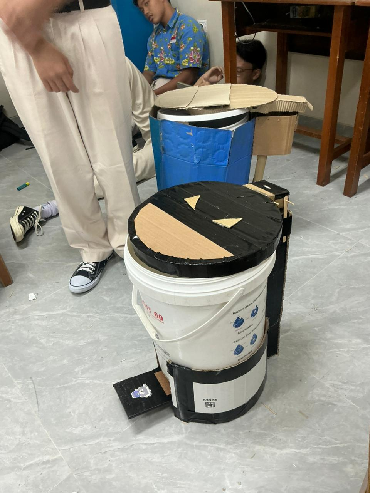
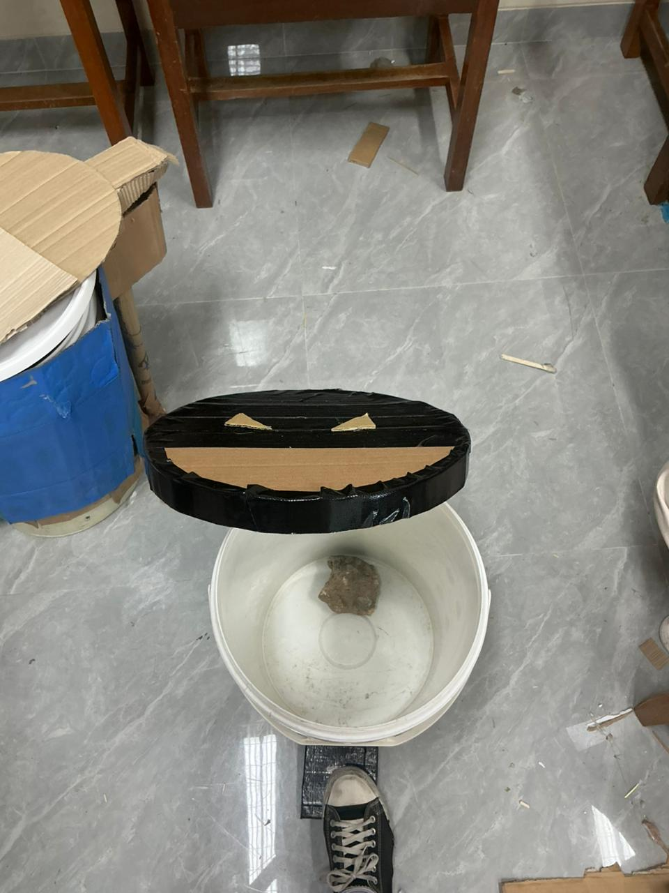

Dokumentasi Kegiatan





Hasil dan Dampak Proyek
Lingkungan Lebih Bersih
Area parkiran menjadi lebih rapi karena tersedia tempat pembuangan sampah yang memadai.
Area parkiran menjadi lebih rapi karena tersedia tempat pembuangan sampah yang memadai.
Peningkatan Kesadaran Siswa
Siswa menjadi lebih sadar pentingnya membuang sampah pada tempatnya.
Siswa menjadi lebih sadar pentingnya membuang sampah pada tempatnya.
Pengalaman Belajar Nyata
Peserta didik belajar memecahkan masalah nyata melalui pendekatan STEM.
Peserta didik belajar memecahkan masalah nyata melalui pendekatan STEM.
Penguatan Karakter
Nilai kerja sama, tanggung jawab, dan kepedulian sosial semakin berkembang.
Nilai kerja sama, tanggung jawab, dan kepedulian sosial semakin berkembang.
Refleksi Pembelajaran
Proyek ini memberikan pengalaman nyata mengenai pentingnya kerja sama, kepedulian lingkungan, serta penerapan STEM dalam kehidupan sehari-hari. Siswa belajar berpikir kritis dan menerapkan nilai gotong royong.